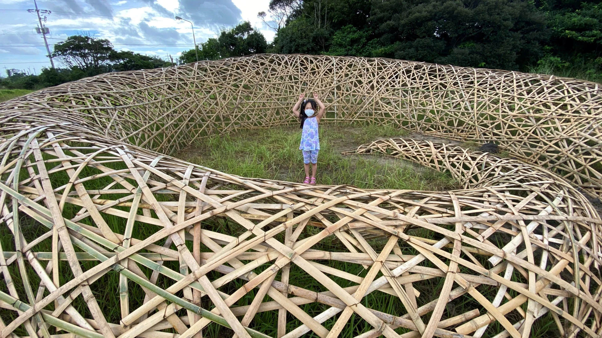

CURATOR & AESTHETICS RESEARCHER
예술, 생태 그리고
함께 살아가는 세계.
유현주 — 전시기획자 · 미학 연구자
전시 아카이브 보기 ↓
SELECTED WORKS / 01
Selected Exhibitions
ABOUT THE CURATOR
예술을 통해 살펴보는
인간과 자연의 연결.
유현주는 전시기획자이자 미학 연구자입니다. 생태미학예술연구소를 2013년 창립하고, 도시와 자연, 인간과 비인간의 관계를 전시와 연구를 통해 탐구해 왔습니다.
《지속가능한 도시-꽃》 시리즈를 비롯해 제주 세계유산축전 아트프로젝트, 대청호환경미술제, 한국·캐나다 국제교류 전시를 기획했습니다.
전시 및 연구 문의 ↗TEXTS & IDEAS / 02